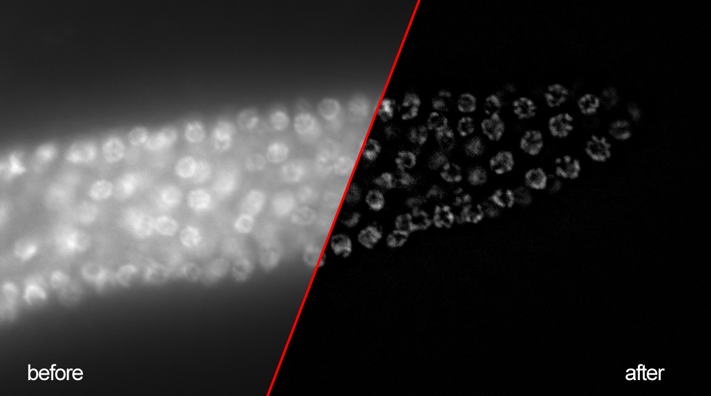

This is a public Beta 1, so please, bear with us if something breaks and don't hesitate to leave your comments, bug reports and suggestions to us!
This application allows you to select an image in the Bisque database (or upload a local file) and filter a 3D widefield fluorescent image.
By using this free and open source software you agree to reference this work and its authors in any products produced using it, including but not limited to scientific papers, posters, technical reports, presentations, leaflets, etc.
Nuclear diameter: approximate average nuclear diameter observed in the image. It is needed to define the size of the structure you would like to enhance.
To visualize obtained results in 3D/4D use our bioView3D client-side application, export centroids as XML document and load it as annotations in bioView3D.
If the results you obtained are not what you have expected please contact us! Share your image and if possible the module execution (MEX) document through Bisque with us.